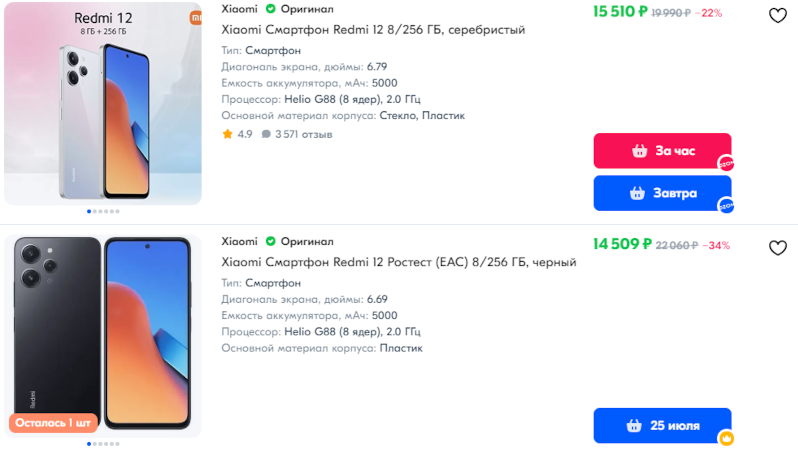
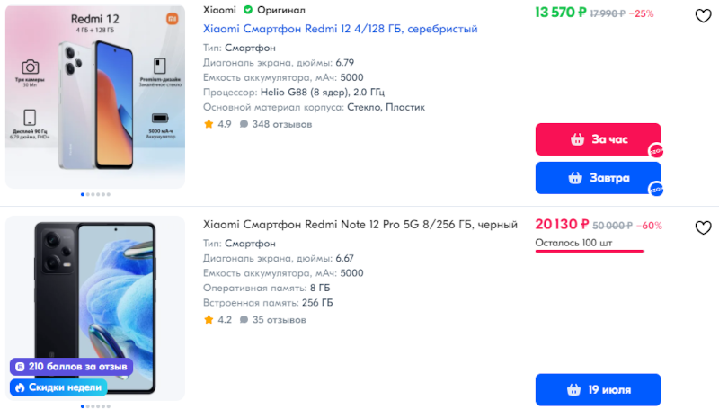

Не все знают, что компания Xiaomi периодически радует любителей мобильной фотографии. В смартфоне Redmi 12, внезапно, установлены мощные камеры, причем по доступной цене.
Хотите узнать, на что способен этот смартфон? Давайте вместе изучим возможности камеры Redmi 12. Мы покажем вам примеры фотографий и поделимся полезными советами по съемке. С нашей помощью вы сможете раскрыть весь потенциал камеры вашего нового устройства.

Возможности камеры Redmi 12
Основная камера Redmi 12 оснащена 50-мегапиксельным сенсором, который гарантирует высокую детализацию снимков. Сочетание высокого разрешения и широкой апертуры f/1.8 позволяет камере собирать максимальное количество света, что важно для съемки в условиях низкой освещенности. Дополнительные сенсоры включают ультраширокоугольную камеру для съемки пейзажей и архитектуры, а также макро-камеру для детализированных снимков с близкого расстояния.
Redmi 12 предлагает разнообразие режимов съемки, включая ночной режим, портретный режим с возможностью регулировки глубины резкости и профессиональный режим, который позволяет пользователям вручную настраивать ISO, скорость затвора и баланс белого. С такими возможностями вы легко подстроите камеру под любую ситуацию и создадите именно те фото, которые хотите.
Для достижения наилучших результатов рекомендуется использовать профессиональный режим. Экспериментируйте с различными настройками, чтобы увидеть, как изменения в экспозиции влияют на фото. Например, увеличение ISO поможет в условиях недостаточного освещения, но может добавить шума к изображениям, поэтому важно найти правильный баланс.
Если вы хотите больше контроля над процессом постобработки, снимайте в формате RAW. Он сохраняет все данные изображения, что дает вам больше возможностей для коррекции и улучшения фотографий в программах для редактирования, таких как Adobe Photoshop или Lightroom.
При создании композиции ваших фото используйте правило третей: поделите изображение на девять равных секторов с помощью двух горизонтальных и двух вертикальных линий. Размещая ключевые объекты вдоль этих линий или на их перекрестках, вы придадите вашим снимкам больше симметрии и визуального баланса.
Не упускайте возможность использовать ультраширокоугольный объектив Redmi 12 для фотографирования пейзажей или городских видов. Этот объектив позволяет запечатлеть значительно большие пространства, что особенно ценно при съемке в ограниченных пространствах.

Где купить?
Для покупки аксессуаров и самого смартфона вы можете посетить интернет-магазин OZON. Здесь вы найдете широкий выбор продукции и сможете ознакомиться с отзывами других покупателей, что поможет сделать информированный выбор.
Xiaomi Redmi 12 предлагает впечатляющие возможности для мобильной фотографии, что делает его отличным выбором для тех, кто ищет качество снимков и функциональность по доступной цене. Следуя советам из статьи, вы сможете максимально использовать потенциал камеры вашего смартфона.
Advanced Data Line